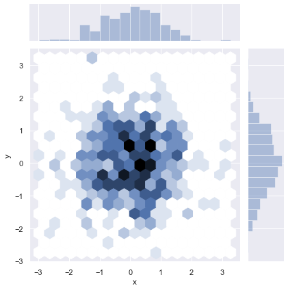

题目：灵巧绘图小当家
1.1.1. 课程介绍
Hello, 我是小K，很高兴又和大家见面了，我们一起继续学习Python数据分析。
为了让你能不受干扰的在学习数据分析路上饱览胜景，请将屏幕调整成全屏，Windows系统：请按F11（或Fn+F11)；苹果系统：请同时按control+command+F。
前面我们已经学习了seaborn画图风格设定及颜色选取的基本函数，本节我们将了解一下seaborn的绘图方式，感受数据可视化的魅力。
1.1.2. 单变量分析绘图
下面我们先来了解一下什么是单变量，什么是单变量分析？
单变量其实就是我们通常接触到的数据集中的一列数据。
单变量分析是数据分析中最简单的形式，其中被分析的数据只包含一个变量。因为它是一个单一的变量，它不处理原因或关系。
单变量分析的主要目的是描述数据并找出其中存在的模式，也就是“用最简单的概括形式反映出大量数据资料所容纳的基本信息”。
本节我们研究的是连续数值型数据的分布，那么什么样的数据是连续数值型数据呢？什么样的数据是离散型数据呢？
连续型数据一般应用在计算机领域，在数据挖掘、数据分类时会遇到此类数据，因其数据不是单独的整十整百的数字，包含若干位小数且取值密集，故称为连续型数据，例如，身高、体重、年龄等都是连续变量。
由记录不同类别个体的数目所得到的数据，称为离散型数据。例如，某一类别动物的头数，具有某一特征的种子粒数，血液中不同的细胞数目等。所有这些数据全部都是整数，而且不能再细分，也不能进一步提高他们的精确度。
了解了这些概念以后，我们看看如何使用seaborn绘制单变量分布？
首先，使用NumPy模块从标准正态分布中随机地抽取1000个数，作为我们的连续数值型数据。
data = np.random.normal(size=1000)
random是NumPy的一个随机模块，在random模块中的normal方法表示从正态分布中随机产生size个数值。
运行下面的代码，查看数据的表现形式：
import numpy as np
# 从正态分布中随机地抽取数据
data = np.random.normal(size=1000)
# 查看数据的表现形式
data
size=1000，表示随机产生1000个数，它们组成的数据是一组连续型的数值型数据。
在seaborn里最常用的观察单变量分布的函数是distplot()，默认地，这个函数会绘制一个直方图，并拟合一个核密度估计。
sns.distplot()的使用方法如下所示：
sns.distplot(data, bins, hist = True, kde = True)
data参数记录绘图所用的数据，而bins参数在绘制直方图时可以进行设置，用于设置分组的个数，默认值时，会根据数据的情况自动分为n个组，若是想指定分组的个数，可以设置该参数，然后计算我们可以增加其数量，来看到更为详细的信息。
hist和kde参数用于调节是否显示直方图及核密度估计图，默认hist、kde均为True，表示两者都显示。我们可以通过修改参数为False选择是否将其中之一去掉。
下面，我们根据上面的数据，用seaborn的distplot()绘制出数据的分布的直方图和概率密度曲线情况：
import numpy as np
import seaborn as sns
# 从标准正态分布中随机地抽取1000个数
data = np.random.normal(size=1000)
sns.set(style='darkgrid')
sns.distplot(data,kde=True)
在上面的结果中，横轴表示数据点的取值，纵轴表示概率密度值。
该结果中使用直方图描述了数据的分布：将数据分成若干个组，用柱形的高度记录每组中数据所占比率。
但是，在这个图中大家还会发现比我们之前学习的柱状图多一个曲线。
这条曲线叫做概率密度曲线。就是采用平滑的峰值函数来拟合观察到的数据点，从而对真实的概率分布进行模拟。
从上图中可以看出，在数字0周围，概率密度值是最大的，但是，随着向两侧的逐渐扩展，概率密度逐渐减小。这样的分布也是一个标准正态分布。
概率密度曲线的原理比较简单，在我们知道某一事物的概率分布的情况下，如果某一个数在观察中出现了，我们可以认为这个数的概率密度很大，和这个数比较近的数的概率密度也会比较大，而那些离这个数远的数的概率密度会比较小。
如果我们只想要显示概率密度曲线，不想显示柱状图，我们也可以使用sns.kdeplot()函数绘制数据的概率密度曲线图。
sns.kdeplot()函数的使用方法如下：
sns.kdeplot(data1, data2, shade = False)
data1和data2参数分别为绘制图像用到的数据，如果绘制单变量数据，只传入一个参数就好，得到概率密度曲线图。
shade参数用于设置图像下方的部分是否设置阴影，默认值为False，表示不绘制阴影。
请大家运行以下代码，绘制概率密度曲线图：
import numpy as np
import seaborn as sns
data = np.random.normal(size=1000)
sns.set(style='darkgrid')
sns.kdeplot(data, shade = True)
以上就是连续数值型单变量数据常见的可视化方法，我们常会使用到直方图、核密度图来描述数据的分布。
在Seaborn中也集成了这两种图像，使用sns.distplot()函数可以将它们绘制在同一张图中。
1.1.3. 绘制双变量联合分布图
有时我们不仅需要查看单个变量的分布，同时也需要查看变量之间的联系，往往还需要进行预测等。这时就需要用到双变量联合分布了。
下面我们一起来看一下连续数值型数据双变量之间的可视化方法。
在Seaborn中绘制连续数值型双变量我们使用sns.jointplot():
seaborn.jointplot(x, y, data=None, kind='scatter')
x、y：分别记录x轴和y轴的数据名称。
data：数据集，data的数据类型为DataFrame。
kind：用于设置图像的类型，可选的类型有：'scatter' | 'reg' | 'resid' | 'kde' | 'hex'，分别表示散点图、回归图、残差图、核密度图和蜂巢图。
双变量散点图
如果我们希望看一看数据中两个变量在二维平面上之间的关系时，则可以使用散点图，因为散点图可以帮助我们很容易地发现一些数据的分布规律。
现在我们同样使用np.random.normal()函数创建一个含有两列数据的DataFrame，然后根据该数据绘制双变量散点图。
运行下方代码，查看数据的创建：
import seaborn as sns
import numpy as np
import pandas as pd
# 创建dataframe: df
df = pd.DataFrame({'x': np.random.normal(size=500),
'y': np.random.normal(size=500)})
df
DataFrame中共有两列，列名为x、y，每列数据为从正态分布中抽取的500个数字组成。
现在，请同学在下面代码框中根据数据尝试使用seaborn.jointplot()函数绘制双变量散点图：
import numpy as np
import pandas as pd
import matplotlib.pyplot as plt
import seaborn as sns
# 请开始绘制
可以参考一下小K的代码：
import numpy as np
import pandas as pd
import matplotlib.pyplot as plt
import seaborn as sns
# 创建dataframe: df
df = pd.DataFrame({'x': np.random.normal(size=500),
'y': np.random.normal(size=500)})
# 绘制双变量散点图
sns.jointplot(x='x', y='y', data=df,kind='reg')
plt.show()
根据结果我们发现，sns.jointplot()函数可以显示两个变量之间的联合关系以及每个单变量的分布。
我们把函数中的kind参数设置为'reg'就可以做一些简单的线性模型拟合。
并且在坐标系的上方和左侧分别绘制了两个变量的直方图和核密度图。
双变量蜂巢图
上面我们根据数据绘制了联合散点图，但是你会发现两个数据并没有明确的线性关系，并且散点图有一个问题，就是相同的点会覆盖在一起，导致我们看不出来浓密和稀疏。
所以我们可以使用蜂巢图查看一下数据的分布情况。
蜂巢图的绘制还是使用seaborn.jointplot()函数，只是将kind参数更该为hex即可。
请运行下方代码，绘制蜂巢图：
import numpy as np
import pandas as pd
import matplotlib.pyplot as plt
import seaborn as sns
%matplotlib inline
df = pd.DataFrame({'x': np.random.randn(500),
'y': np.random.randn(500)})
sns.jointplot(x='x', y='y', data=df, kind='hex')
plt.show()
蜂巢图中每个六边形表示一个范围，用颜色表示这个范围内的数据量，颜色越白的地方数据量越小，颜色越深的地方表示数据量越大。
当数据比较大的时候该种方式，更容易找出数据的分布情况。

双变量密度图
在单变量分析的时候，我们绘制了单变量的概率密度曲线，在双变量中我们也可以使用密度图来分析数据的分布情况。
密度图的绘制还是使用seaborn.jointplot()函数，只是将kind参数更该为kde即可。
请运行下方代码，绘制密度图：
import numpy as np
import pandas as pd
import matplotlib.pyplot as plt
import seaborn as sns
%matplotlib inline
df = pd.DataFrame({'x': np.random.randn(500),
'y': np.random.randn(500)})
sns.jointplot(x='x', y='y', data=df, kind='kde')
plt.show()
根据图形可以看出，双变量密度图是使用一些封闭但是不规则的曲线来表示，数据密度越高的地方颜色越深，数据密度越低的地方颜色越浅。
1.1.4. 多变量关系分布图
我们在做数据分析时面对的数据集中往往有很多列数据，在我们还没有确定针对哪两个变量进行挖掘的时候，比较稳妥的做法就是将数据中的每两列都考虑一次，做一个完整的变量关系可视化。
以著名的iris数据集为例，iris数据集有4个特征，那么每两个特征都考虑一次，就有16种组合，路径为./data/iris.csv。
该数据集测量了所有150个样本的4个特征，分别是：
- sepal length（花萼长度）
- sepal width（花萼宽度）
- petal length（花瓣长度）
- petal width（花瓣宽度）
- species（花朵种类）
运行下方代码，产看数据的详情：
import pandas as pd
data = pd.read_csv('./iris.csv')
data.head()
我们使用seaborn中的pairplot()方法，就可以绘制连续数值型多变量关系分布图。
sns.pairplot( data, hue, vars, kind, diag_kind)
data表示绘图所用到的数据集。
hue参数表示按照某个字段进行分类。
vars参数可以用于筛选绘制图像的变量，用列表的形式传入列名称。
kind参数用于设置变量间图像的类型，可以选择'scatter'散点图，或者 'reg'回归图。
diag_kind用于设置对角线上的图像类型，可以选择'hist'直方图， 或者'kde'核密度图。
接下来，我们就来使用pairplot函数查看一下数据集中的每两个连续型变量的分布图：
运行下方代码，查看续型变量的分布图：
import pandas as pd
import matplotlib.pyplot as plt
import seaborn as sns
data = pd.read_csv('./iris.csv')
sns.pairplot(data)
plt.show()
从图中可以看出，在petal_length和petal_width散点图中，呈现了比较明显的线性关系。
接下来我们将分类变量species考虑在图中，看看不同类别的鸢尾花的数据有没有明显的差别，将hue参数设置为species。
运行下方代码，查看结果：
import pandas as pd
import matplotlib.pyplot as plt
import seaborn as sns
data = pd.read_csv('./iris.csv')
sns.pairplot(data,hue='species')
plt.show()
从图中可以看出，不同的颜色代表着花的不同种类，同一种的数据聚集在一起，并且与其他类别的数据交集比较少，表示三种花有明显的差别。
我们也可以使用pairplot函数绘制两个变量的关系分布图。
使用kind参数设置两个变量间使用回归图，使用diag_kind参数设置对角线上的图像类型为密度图。
运行下方代码，绘制sepal_length, sepal_width两个变量的关系分布图。
import pandas as pd
import matplotlib.pyplot as plt
import seaborn as sns
data = pd.read_csv('./iris.csv')
# 双变量图像设置为回归图，单变量（对角线图）设置为核密度图
sns.pairplot(data, hue='species',vars=['sepal_length', 'sepal_width'],kind='reg', diag_kind='kde')
plt.show()
大家可以根据自己对于数据的理解，设置不同的图像样式，来继续发掘数据中的信息。
1.1.5. 本节总结
本节课中，我们学习了如何绘制连续数值型变量分布图，分别针对单变量、双变量和多变量数据进行了研究。
最后我们把本节的知识点总结一下：
1.1.6. 下节预告
学习了这么久，是该检验一下我们自己的掌握程度了，下节我们将整体体验一下分析的流程。
1.1.7. 练习1
题目：一抹祥云，定位用餐之人
本节练习我们将使用Seaborn模块内置数据集，数据中记录了顾客信息、顾客消费信息和支付小费信息。数据文件的路径为./tips.csv。
数据的基本信息为：
total_bill：消费总金额；
tip：小费；
sex：性别；
smoker：是否吸烟；
day：用餐日期；
time：用餐时间；
size：用餐人数。
根据数据分别完成以下要求：
- 绘制出用餐人数的概率分布图；
- 绘制出用餐人数与小费的散点图；
参考答案：
import pandas as pd
import matplotlib.pyplot as plt
import seaborn as sns
data = pd.read_csv('./tips.csv')
# 查看数据
data.head()
# 绘制用餐人数的概率分布图
# 取出用餐人数
size = data['size']
sns.set(style='darkgrid')
sns.distplot(size,kde=True)
# 绘制出用餐人数与小费的散点图
# 取出用餐人数与小费的数据
data = data[['size','tip']]
# 参数x_jitter，这个参数可以设置size值的偏离范围，这里size代表用餐人数，那么我们设置的x_jitter应该在0-1之间，我们设置为0.3,散点图显得更易观察
sns.jointplot(x='size', y='tip', data=data,kind='reg',x_jitter=0.3)
初步结论：
- 根据用餐人数的概率分布图可以看出，用餐的人数在2-4的概率居多，而2人用餐的概率最大。
- 从用餐人数与小费的散点图中可以看出，虽然用餐人数和小费之间也是一个线性增长的趋势。
1.1.8. 练习2
题目：小费消费，为何总爱相对
本练习我们继续使用Seaborn模块内置数据集，路径为：./tips.csv。
完成下面的要求：
- 绘制出每两列变量之间的关系；
- 不同性别的消费数据有没有明显的差别。
- 绘制消费总额与小费两个变量的关系分布图。
参考答案：
import pandas as pd
import matplotlib.pyplot as plt
import seaborn as sns
data = pd.read_csv('./tips.csv')
# 绘制出每两列变量之间的关系
sns.pairplot(data)
# 不同性别的消费数据有没有明显的差别
sns.pairplot(data,hue='sex')
# 绘制消费总额与小费两个变量的关系分布图
sns.pairplot(data,vars=['total_bill', 'tip'],kind='reg', diag_kind='kde')
plt.show()
初步结论：
- 不同性别的消费数据之间没有明显的差别。
- 小费金额会根据消费金额成线性增长关系。